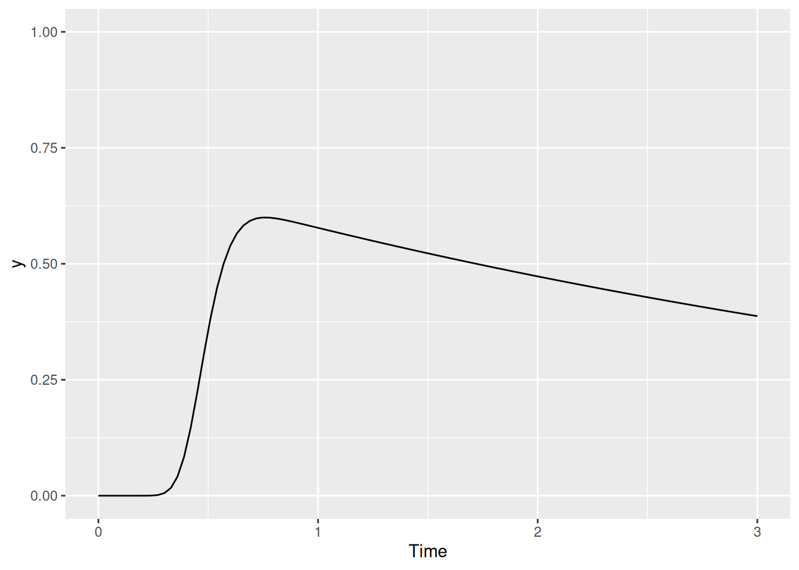
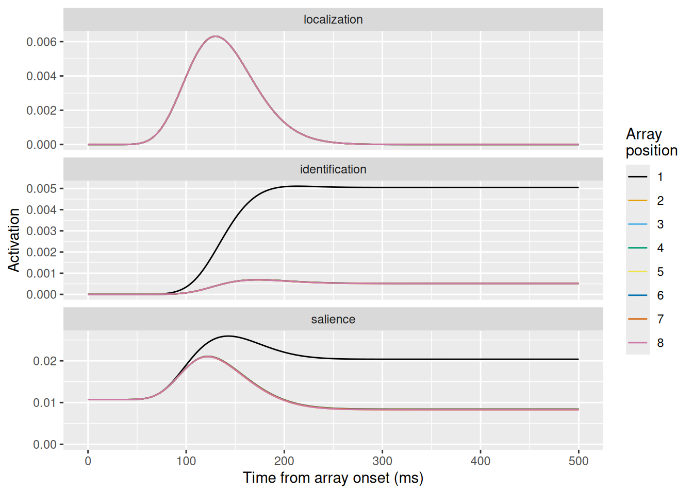

Code
knitr::include_graphics("img/ex_vn+array.png")These notes are a companion to this chapter in the 2nd edition of An Introduction to Model-Based Cognitive Neuroscience (Cox et al., 2024). That chapter—like the rest in that book—covers the burgeoning field of model-based cognitive neuroscience. This field seeks to use cognitive models like those we’ve developed throughout this course to help understand how brains implement the representations and processes posited by models. In this way, cognitive models act as a “bridge” between different levels of explanation, helping us understand not merely how the brain does something, but why. In this chapter, we closely examine one model in this field, Salience by Competitive and Recurrent Interactions (SCRI, pronounced “scry” like the mystical art; Cox et al. (2022)).
SCRI was developed to explain how individual visually-responsive neurons in the Frontal Eye Fields (FEF) select the locations of potential target items in visual search. According to SCRI, these neurons use their firing rate to signal when a location in the visual field contains an object that is likely to be a search target. In other words, these neurons produce more spikes or action potentials when there is a target (or target-like) object in their receptive fields than when there is a distractor (or nothing) in their receptive fields. In that sense, these neurons signal the relative salience of different parts of the visual field based on how likely they are to contain a target.
Neurophysiological studies have suggested that the signals produced by FEF visual neurons act as evidence that is used to decide where to move the eyes (Hanes & Schall, 1996). Subsequently, Purcell et al. (2010) and Purcell et al. (2012) used recorded activity from these neurons as input to an accumulator model of decision making and showed that, in doing so, they could account for the timing and end-points of saccades (eye movements) that monkeys made in visual search tasks. Thus, in explaining how these FEF visual neurons operate, SCRI is ultimately a theory of evidence generation—where an accumulator’s samples of evidence come from.
What sets SCRI apart from other neurophysiologically-informed cognitive models is that it explains the moment-by-moment spiking activity of individual neurons not in physiological terms (e.g., ion channels and membrane conductance) but in cognitive terms. This is possible because SCRI assumes a very simple and transparent linking proposition (Schall, 2004; Teller, 1984): that FEF visual neuron spike rates are directly related to the relative salience of that neuron’s receptive field.
knitr::include_graphics("img/ex_vn+array.png")The figure above shows (a) a typical example of a visual search task and (b) an example of how a typical FEF visual neuron responds in this kind of visual search task.
In the visual search tasks to which SCRI has been applied, each trial presents an array of items. The items are presented at equidistant points on an imaginary circle centered on a fixation square that the monkey must fixate before the trial can start. Each array contains exactly one target item, which remains the same throughout a block of trials (so the monkey knows what they are looking for). The other items in the array are distractors. The monkey’s job is to make a saccade from the central fixation square to wherever they think the target is in the display (they’re really good at this, as you might imagine).
Displays can vary in set size, the number of items in the array. They can also vary in how similar the distractors are to the target. Sometimes, the target item is defined by its form, as in the above example where the target is a “T” shape and the distractors are “L” shaped. In other conditions, the target is defined by its color or by its prevailing motion direction.
The right part of the figure shows how a typical FEF visual neuron responds, depending on whether the item in its receptive field (RF; circled areas on the left) is a target or a distractor. During phase 1, the neuron maintains a constant baseline firing rate. During phase 2, the neuron’s firing rate increases regardless of whether the item in its RF is a target or a distractor. Finally, during phase 3, the neurons fires more if the item is a target than if it is a distractor. Although individual neurons vary widely in their particulars, they all demonstrate this same qualitative pattern.
knitr::include_graphics("img/fef_brain.png")knitr::include_graphics("img/fef_model_v2.png")The figure above illustrates the different elements of SCRI and how they are arranged, as well as their putative correspondence with neurons in different brain areas. For now, we will just describe them narratively, but don’t worry we will implement the model formally below. SCRI consists of three sets of units (I use the term “units” here so as to be agnostic about whether they necessarily refer to single neurons or whether they could reflect populations of neurons):
The characteristic three-phase pattern of FEF visual neurons arises from the dynamic interactions between these three unit types. When the localization units detect the sudden appearance of the items in the search array, this excites the salience units in FEF. Now excited, these units “open the gate” for the identification units to figure out whether the features of the items in each location resemble those of the search target. If the identification units detect the presence of target-like features, they become active and send excitation back to FEF salience units. Otherwise, they don’t excite the FEF salience units. In the end, the only salience units—and therefore the only FEF visual neurons—that remain with high firing rates are those with receptive fields that contain target-like items. This evidence feeds forward into movement neurons (\(m_i\)) that eventually initiate a saccade into one of those receptive fields.
One way to think of how SCRI works is this: The localization units kick open the doors of attention and the identification units prop open the doors to regions likely to contain a target.
The example of SCRI gives us a chance to address an additional type of modeling that is done in the cognitive sciences. Dynamical systems are models that are defined in terms of a set of equations that describe how the system changes over time. Of particular interest are models in which a system’s own state steers its dynamics. Although all of the models we have dealt with in this course involve dynamics of some kind—the dynamics of accumulating evidence, the dynamics of learning, the dynamics of social interactions, etc.—those dynamics have involved some element of randomness. Such models thus broadly fall under the heading of “stochastic dynamical systems”. For a weighty introduction to stochastic dynamical systems in the context of evidence accumulation models, see Smith (2000).
Often, stochastic dynamical systems can only be simulated—only in rare situations (like with the diffusion and random walk models we started with) can the predictions of such systems be computed and therefore “fit” to data. The dynamical system we will explore in this chapter is deterministic. A deterministic dynamical system will always produce the same behavior when put into the same set of initial conditions.
It is reasonable to ask whether any interesting cognitive models can be constructed as deterministic dynamical systems. For one thing, there can still be “noise” in the model to account for stochastic events in data. For example, in a regression model we assume that the underlying linear system is deterministic but we have a “noise” term that accounts for deviations from that linear system. So these kinds of models can still be applied to systems with stochastic elements; it is just that the noise does not drive the dynamics. For another thing, when a system’s dynamics are driven, at least in part, by its own states, there can be many interesting interactions between different parts of the system. Even if the system is deterministic, those interactions can still yield a great variety of potential behavior.
Finally, it is worth keeping in mind that a deterministic dynamical system, even if it cannot be solved analytically, can usually be solved numerically, as we will do here. Computers are really good at this, meaning that it is practical to fit dynamical systems models to data, since we can quickly compute their predictions and adjust their parameters to find those that fit best.
As we know, all models are deliberate simplifications. Assuming that the underlying dynamics of a system are deterministic is one such simplification. But as we shall see below, this simplification can be worth the cost when it helps us understand a system better without sacrificing its ability to fit data.
The simplest kind of dynamics are those that depend only on how much time has passed. In that case, we can describe such a system with an equation or rule that does not need to make any reference to other parts of the system.
In SCRI, the localization units are described by this kind of dynamic. Specifically, the activation of a localization unit at time \(t\) is the PDF of a Gamma distribution. In SCRI, the Gamma distribution is parameterized in terms of its mode or “peak”, \(\omega_p\), and its standard deviation or “spread”, \(\omega_s\). We can convert these to the rate \(r\) and shape \(s\) with the following formulae: \[\begin{align*}
r & = \frac{\omega_p + \sqrt{\omega_p^2 + 4 \omega_s^2}}{2 \omega_s^2} \\
s & = 1 + \omega_p r
\end{align*}\] In the function for SCRI, the peak and spread are called loc_peak and loc_spread and the formulae above are written below:
loc_rate <- (loc_peak + sqrt(loc_peak^2 + 4 * loc_spread^2)) / (2 * loc_spread^2)
loc_shape <- 1 + loc_peak * loc_rateIn math terms, we can write the activation of a localization unit centered on location \(i\) as \[ x_i(t) = \chi_i \gamma \left(t \mid s, r \right) \] where \(\chi_i\) is a scaling parameter that represents the strength of the localization signal and \(\gamma \left(t \mid s, r \right)\) is short for the PDF of the Gamma distribution with shape \(s\) and rate \(r\) evaluated at time \(t\). The graph below visualizes how these dynamics change with the peak and spread of the function, assuming \(\chi_i = 1\).
expand_grid(t = seq(0, 300), loc_peak = c(70, 100, 130), loc_spread = c(20, 40, 60)) %>%
mutate(
loc_rate = (loc_peak + sqrt(loc_peak^2 + 4 * loc_spread^2)) / (2 * loc_spread^2),
loc_shape = 1 + loc_peak * loc_rate,
act = dgamma(t, shape = loc_shape, rate = loc_rate)
) %>%
ggplot(aes(x = t, y = act, color = factor(loc_peak), linetype = factor(loc_spread))) +
geom_line() +
scale_color_brewer(palette = "Dark2") +
labs(x = "Time from array onset (ms)", y = expression("Activation "*x[i](t)), color = expression(omega[p]), linetype = expression(omega[s]))The next type of dynamics in SCRI are not functions of time alone. Instead, they are a function of the excitation and inhibition that an element of the model receives from other elements. In that sense, they are very similar to the accumulator models that we examined before. In those models, an accumulator received excitation in the form of incoming samples of evidence but could also receive inhibition, either from the evidence sent to other accumulators—feedforward inhibition—or from the amount of evidence present in other accumulators—lateral inhibition. In addition, accumulators could exhibit leakage, where they would lose a certain proportion of their accumulated evidence from one moment to the next.
One issue we confronted with accumulator models was whether or not we allowed them to have negative amounts of accumulated evidence. Since we are now trying to build a model of neural firing rates, it doesn’t make sense to allow those to be negative. Moreover, neurons cannot increase their firing rate indefinitely—at some point, they reach saturation.
Shunting dynamics (Grossberg, 1980) are a natural way to model a system that receives both excitation and inhibition while keeping its activation bounded both above—at a saturation point—and below—at zero. Shunting dynamics are described by the following differential equation, which specifies the time derivative of a unit’s activity: \[ \frac{dy}{dt} = \left[S - y(t) \right] \times E(t) - y(t) I(t) \] where \(y(t)\) is the activation of a unit at time \(t\), \(S\) is the unit’s saturation point, and \(E(t)\) and \(I(t)\) are the amount of excitation and inhibition the unit is receiving at time \(t\), respectively. Note that both \(E(t)\) and \(I(t)\) must be nonnegative. Intuitively, the equation above says that excitation will only result in an increase to the unit’s activation to the extent that the unit is far from its saturation point (note that \(S - y(t)\) acts to scale the excitation \(E(t)\)). At the same time, inhibition will only result in a decrease of the unit’s activation to the extent that the unit has any activity to lose (note that inhibition \(I(t)\) is scaled by the unit’s current activation \(y(t)\)).
Before fleshing out the different kinds of excitation and inhibition present in SCRI, let’s just see what happens if we assume that \(E\) and \(I\) are constant and set \(S = 1\). The graph below shows the value of \(\frac{dy}{dt}\) for different combinations of \(E\) and \(I\) and for different values of the current activation \(y(t)\).
expand_grid(y = seq(0, 1, length.out = 101), E = seq(0, 4), I = seq(0, 2)) %>%
mutate(dy_dt = (1 - y) * E - y * I) %>%
ggplot(aes(x = y, y = dy_dt, color = E, group = E)) +
geom_line() +
geom_hline(yintercept = 0, linetype = "dashed", color = "black") +
scale_color_viridis_c() +
facet_wrap("I", labeller = label_both) +
labs(x = expression(y(t)), y = expression(frac(dy, dt)), color = "E")When there is no inhibition (left graph), the derivative goes to zero as \(y(t) \rightarrow 1\), which is the saturation point (recall that \(S = 1\) above). When there is inhibition but no excitation (purple lines in the middle and right graphs), the derivative goes to zero as \(y(t) \rightarrow 0\). Otherwise, the derivative only equals zero when the current activation \(y(t)\) corresponds to \(\frac{E}{E + I}\), i.e., the relative proportion of excitation in the input.
The differential equation above is a great description of how the state of a unit will change at any given moment in time. How can we go from this description to seeing the complete trajectory of how a unit’s activity evolves over time? The short answer is that we need to integrate the differential equation over a span of time: \[ y(t) = \int_{\tau = t_0}^t \frac{dy}{d \tau} d \tau \] But the short answer doesn’t get us very far because, in general, the differential equations that describe a dynamical system can’t be integrated mathematically.
So the long answer is that we will write a function in R and then have the computer do the integration for us—this is called numerical integration. We will use the R package deSolve, which has a function ode which allows us to compute the solution to the integration problem above. The ode function needs three arguments: y, the initial value(s) of the function; times, a vector of time points at which to evaluate the function; and func, a function that computes the derivative given the time t, current state y, and parameters parms.
Let’s get to it. First, let’s write our function. This is actually pretty straightforward, since we can just directly translate the equation into R code, as shown below.
shunting_system <- function(t, y, parms) {
# dy/dt = (S - y) * E - y * I
dy <- (parms$saturation - y) * parms$excitation - y * parms$inhibition
return(list(dy))
}There are a couple of things worth noting about how we have to write this function: * The function always needs three arguments, t, y, and parms, even if you don’t need them all! Notice that we never refer to t explicitly, above. * The parms argument is expected to be either a list or vector of parameters for the function. The shunting_system function above assumes that parms is a list, so it refers to specific parameters using the $. * As we will see below, y can be a vector. The function needs to compute a vector of derivatives that is the same length as y. But for whatever reason, the return type needs to be a list, hence why the function returns list(dy) rather than just dy.
Let’s take our shunting system out for a spin! In the chunk of code below, I illustrate how we can use the ode function in the deSolve package to “solve” the shunting system we just defined.
# Initial value
y0 <- 0.1
# Times at which to calculate the function
times <- seq(0, 3, length.out = 101)
# Parameters of the function
parms <- list(
saturation = 1,
excitation = 1,
inhibition = 1
)
solved <- ode(y = y0,
times = times,
func = shunting_system,
parms = parms)
print(head(solved)) time 1
[1,] 0.00 0.1000000
[2,] 0.03 0.1232951
[3,] 0.06 0.1452315
[4,] 0.09 0.1658913
[5,] 0.12 0.1853482
[6,] 0.15 0.2036719As you can see, the result is stored in solved as a matrix. The first column is always called "time" and the remaining columns are the values of y at each point in time. Let’s make a graph to visualize the results.
tibble(t = solved[,"time"], y = solved[,2]) %>%
ggplot(aes(x = t, y = y)) +
geom_line() +
coord_cartesian(ylim = c(0, 1)) +
labs(x = "Time", y = "y")Cool! Now let’s try running the function with a bunch of different values of excitation, inhibition, and initial value y0, as shown below.
to_solve <- expand_grid(
saturation = 1,
excitation = seq(0, 3),
inhibition = seq(0, 3),
y0 = seq(0.1, 0.9, length.out = 5)
)
times <- seq(0, 3, length.out = 101)
to_plot <- c()
for (i in 1:nrow(to_solve)) {
solved <- ode(y = to_solve$y0[i],
times = times,
func = shunting_system,
parms = as.list(to_solve[i,])
)
to_plot <- rbind(
to_plot,
cbind(to_solve[i,], tibble(t = solved[,"time"], y = solved[,2]))
)
}
to_plot %>%
ggplot(aes(x = t, y = y, color = y0, group = y0)) +
geom_line() +
facet_grid(excitation ~ inhibition, labeller = label_both) +
scale_color_viridis_c() +
labs(x = "Time", y = "y", color = "y(0)")Regardless of the initial activity level \(y(0)\), the activity will eventually converge on a value that is a balance between excitation and inhibition, i.e., \(\frac{E}{E + I}\). Unless, of course, there is no excitation or inhibition in which case the activity level remains unchanged from its initial value (the top left corner). Finally, see how even when there is only excitation (left column) or only inhibition (top row), the system’s activation stays within its bounds between 0 and 1 (the saturation point).
Now let’s start making things interesting. Now that we’ve seen how shunting dynamics work, let’s replace the constant “excitation” parameter in our model with the time-varying excitation we saw when we described the localization units. We will assume that there is a parameter for the shape and rate of the gamma function in our parms list, as shown below.
shunting_system <- function(t, y, parms) {
# Localization signal (x) depends only on the current time
loc <- parms$strength_loc * dgamma(t, shape = parms$loc_shape, rate = parms$loc_rate)
dy <- (parms$saturation - y) * loc - y * parms$inhibition
return(list(dy))
}
# Initial value
y0 <- 0
# Times at which to calculate the function
times <- seq(0, 3, length.out = 101)
loc_peak <- 0.5
loc_spread <- 0.1
loc_rate <- (loc_peak + sqrt(loc_peak^2 + 4 * loc_spread^2)) / (2 * loc_spread^2)
loc_shape <- 1 + loc_peak * loc_rate
# Parameters of the function
parms <- list(
saturation = 1,
strength_loc = 1,
loc_shape = loc_shape,
loc_rate = loc_rate,
inhibition = 0.2
)
solved <- ode(y = y0,
times = times,
func = shunting_system,
parms = parms)
tibble(t = solved[,"time"], y = solved[,2]) %>%
ggplot(aes(x = t, y = y)) +
geom_line() +
coord_cartesian(ylim = c(0, 1)) +
labs(x = "Time", y = "y")
We can now see two things happening: First, there is a sharp increase in activation as the transient excitation increases. But once it’s gone, activation decays gradually because we have set the inhibition parameter to something greater than zero. In fact, this gradual decay is a part of SCRI and is referred to as leakage, since we can think of it as corresponding to how quickly activity “leaks” out over time. In our next amendment to the function, we will change its name accordingly.
In addition to leakage and transient excitation, we can also have tonic excitation. This corresponds to “background” sources of excitation that might be present even in the absence of a stimulus, as shown below where we call this tonic excitation baseline.
shunting_system <- function(t, y, parms) {
# Localization signal (x) depends only on the current time
loc <- parms$strength_loc * dgamma(t, shape = parms$loc_shape, rate = parms$loc_rate)
dy <- (parms$saturation - y) * (parms$baseline + loc) - y * parms$leakage
return(list(dy))
}
# Initial value
y0 <- 0
# Times at which to calculate the function
times <- seq(0, 3, length.out = 101)
loc_peak <- 0.5
loc_spread <- 0.1
loc_rate <- (loc_peak + sqrt(loc_peak^2 + 4 * loc_spread^2)) / (2 * loc_spread^2)
loc_shape <- 1 + loc_peak * loc_rate
# Parameters of the function
parms <- list(
saturation = 1,
strength_loc = 1,
loc_shape = loc_shape,
loc_rate = loc_rate,
baseline = 0.1,
leakage = 0.2
)
solved <- ode(y = y0,
times = times,
func = shunting_system,
parms = parms)
tibble(t = solved[,"time"], y = solved[,2]) %>%
ggplot(aes(x = t, y = y)) +
geom_line() +
coord_cartesian(ylim = c(0, 1)) +
labs(x = "Time", y = "y")We can see the effect of the baseline excitation in the slight early rise of activation prior to the sudden transient excitation.
So far, we have only modeled the dynamics of a single unit. Now let’s imagine that we have several such units. Each one now has an activation value, so y will be a vector with one entry for each unit. That means that dy will also be a vector.
Allowing for multiple units also allows us to incorporate two forms of inhibition: We can have feedforward inhibition resulting from the excitatory inputs to other units. And we can have lateral inhibition between the units themselves.
Computing the amount of feedforward or lateral inhibition to each unit is made easier if we use a matrix, where each entry represents the strength of inhibition between each pair of units. This matrix will also make it possible to model situations in which the strength of inhibition varies between units, for example, as a function of the distance between their receptive fields. Below, I show how such a matrix is created and used to compute the total amount of inhibition flowing into each unit.
N <- 4
# Activation of four units
y <- c(0.9, 0.5, 0.1, 0)
# Amount of lateral inhibition between units
lat <- 0.5
# Matrix of strength of lateral inhibition between each pair of units
(lat_sum <- lat * (1 - diag(N))) [,1] [,2] [,3] [,4]
[1,] 0.0 0.5 0.5 0.5
[2,] 0.5 0.0 0.5 0.5
[3,] 0.5 0.5 0.0 0.5
[4,] 0.5 0.5 0.5 0.0# Total amount of lateral inhibition for each unit
(lat_sum %*% y) [,1]
[1,] 0.30
[2,] 0.50
[3,] 0.70
[4,] 0.75Below, we have amended our shunting_system function to allow for lat and ff_loc as parameters which contribute to the inhibition for each unit.
shunting_system <- function(t, y, parms) {
loc <- parms$strength_loc * dgamma(t, shape = parms$loc_shape, rate = parms$loc_rate)
dy <- (parms$saturation - y) * (parms$baseline + loc) -
y * (parms$leakage + parms$ff_loc * c(parms$ff_loc_sum %*% loc) + parms$lat * c(parms$lat_sum %*% y))
return(list(dy))
}
N <- 8
# Initial value
y0 <- rep(0, N)
# Times at which to calculate the function
times <- seq(0, 3, length.out = 101)
loc_peak <- 0.5
loc_spread <- 0.1
loc_rate <- (loc_peak + sqrt(loc_peak^2 + 4 * loc_spread^2)) / (2 * loc_spread^2)
loc_shape <- 1 + loc_peak * loc_rateNow let’s see what happens if we include feedforward inhibition from the transient localization signal. For the following example, we will assume that this localization varies in strength between different locations in equal increments between 0.5 and 1.5 (these numbers were chosen arbitrarily, just for illustration). We’ve turned off lateral inhibition (lat = 0) and tonic excitation (baseline = 0) too for simplicity.
# With feedforward inhibition
parms_wff <- list(
saturation = 1,
strength_loc = seq(1.5, 0.5, length.out = N),
loc_shape = loc_shape,
loc_rate = loc_rate,
ff_loc = 1,
ff_loc_sum = 1 - diag(N),
lat = 0,
lat_sum = 1 - diag(N),
baseline = 0,
leakage = 0.2
)
# No feedforward inhibition
parms_noff <- list(
saturation = 1,
strength_loc = seq(1.5, 0.5, length.out = N),
loc_shape = loc_shape,
loc_rate = loc_rate,
ff_loc = 0,
ff_loc_sum = 1 - diag(N),
lat = 0,
lat_sum = 1 - diag(N),
baseline = 0,
leakage = 0.2
)
solved_wff <- ode(y = y0,
times = times,
func = shunting_system,
parms = parms_wff)
solved_noff <- ode(y = y0,
times = times,
func = shunting_system,
parms = parms_noff)
y_wff <- solved_wff[,2:ncol(solved_wff)]
y_noff <- solved_noff[,2:ncol(solved_noff)]
dimnames(y_wff) <- dimnames(y_noff) <- list(
"t" = times,
"location" = 1:N
)
rbind(
cbind(ff = "With feedforward inhibition", array2DF(y_wff, responseName = "act")),
cbind(ff = "No feedforward inhibition", array2DF(y_noff, responseName = "act"))
) %>%
mutate(t = as.numeric(t)) %>%
ggplot(aes(x = t, y = act, color = location)) +
geom_line() +
scale_color_okabeito() +
facet_wrap("ff") +
labs(x = "Time", y = "Activation", color = "Location")By counteracting the excitation each unit receives, feedforward inhibition acts to tamp down the activation of each unit in response to the transient localization signal.
The following graph illustrates the effect of lateral inhibition between units.
# With lateral inhibition
parms_wlat <- list(
saturation = 1,
strength_loc = seq(1.5, 0.5, length.out = N),
loc_shape = loc_shape,
loc_rate = loc_rate,
ff_loc = 0,
ff_loc_sum = 1 - diag(N),
lat = 0.5,
lat_sum = 1 - diag(N),
baseline = 0,
leakage = 0.2
)
# No lateral inhibition
parms_nolat <- list(
saturation = 1,
strength_loc = seq(1.5, 0.5, length.out = N),
loc_shape = loc_shape,
loc_rate = loc_rate,
ff_loc = 0,
ff_loc_sum = 1 - diag(N),
lat = 0,
lat_sum = 1 - diag(N),
baseline = 0,
leakage = 0.2
)
solved_wlat <- ode(y = y0,
times = times,
func = shunting_system,
parms = parms_wlat)
solved_nolat <- ode(y = y0,
times = times,
func = shunting_system,
parms = parms_nolat)
y_wlat <- solved_wlat[,2:ncol(solved_wlat)]
y_nolat <- solved_nolat[,2:ncol(solved_nolat)]
dimnames(y_wlat) <- dimnames(y_nolat) <- list(
"t" = times,
"location" = 1:N
)
rbind(
cbind(lat = "With lateral inhibition", array2DF(y_wlat, responseName = "act")),
cbind(lat = "No lateral inhibition", array2DF(y_nolat, responseName = "act"))
) %>%
mutate(t = as.numeric(t)) %>%
ggplot(aes(x = t, y = act, color = location)) +
geom_line() +
scale_color_okabeito() +
facet_wrap("lat") +
labs(x = "Time", y = "Activation", color = "Location")Lateral inhibition has a much more dramatic effect on activation dynamics, “sharpening” the effect of transient excitation. This is because, by definition, lateral inhibition only has an effect when there is activity present. The dynamics above result from (a) the initial transient excitation boosting the activation of the units which then leads to (b) increased lateral inhibition between the now-active units.
Lateral inhibition is a form of “recurrent” interaction, in that lateral inhibition from one unit affects the activation of another unit which, in turn, sends lateral inhibition back to the first unit. As we’ve seen, though, SCRI involves another kind of recurrent interaction: The visual salience units (which represent individual FEF visual neurons) act as gates which govern how quickly identification units can detect the presence/absence of target-like features.
To see how this works, we will set up a model with just two units: a salience unit (which we will call vis) and an identification unit (which we will call id). There is still a transient localization signal loc. The derivative for the id unit will be another shunting equation, but with the excitatory term multiplied by the current activity of the vis unit. This how recurrent gating is implemented.
recurrent_gating_system <- function(t, y, parms) {
vis <- y[1]
id <- y[2]
# Localization signal (x) depends only on the current time
loc <- parms$strength_loc * dgamma(t, shape = parms$loc_shape, rate = parms$loc_rate)
# Derivative of the salience unit
d_vis <- (parms$saturation_vis - vis) * (parms$baseline + loc) -
vis * (parms$leakage)
# Derivative of the identification unit
d_id <- (parms$strength_id - id) * vis
# Return a listified vector of both sets of derivatives
return(list(c(d_vis, d_id)))
}
# Initial values
y0 <- c(0, 0)
# Times at which to calculate the function
times <- seq(0, 3, length.out = 101)
loc_peak <- 0.5
loc_spread <- 0.1
loc_rate <- (loc_peak + sqrt(loc_peak^2 + 4 * loc_spread^2)) / (2 * loc_spread^2)
loc_shape <- 1 + loc_peak * loc_rate
# Parameters of the function
parms <- list(
saturation_vis = 1,
strength_loc = 1,
strength_id = 1,
loc_shape = loc_shape,
loc_rate = loc_rate,
baseline = 0,
leakage = 0.2
)
solved <- ode(y = y0,
times = times,
func = recurrent_gating_system,
parms = parms)
rbind(
tibble(t = solved[,"time"], y = solved[,2], unit_type = "salience"),
tibble(t = solved[,"time"], y = solved[,3], unit_type = "identification")
) %>%
ggplot(aes(x = t, y = y, color = unit_type, linetype = unit_type)) +
geom_line() +
coord_cartesian(ylim = c(0, 1)) +
labs(x = "Time", y = "y", color = "Unit type", linetype = "Unit type")We can see that the activity of the identification unit only begins to grow once the salience unit receives its transient excitation. But technically what we just implemented is not recurrent because although the salience unit gates the identification unit, the identification unit has no influence over the salience unit. In SCRI, identification units send excitation back to the salience units that gate them. This is implemented below.
recurrent_gating_system <- function(t, y, parms) {
vis <- y[1]
id <- y[2]
# Localization signal (x) depends only on the current time
loc <- parms$strength_loc * dgamma(t, shape = parms$loc_shape, rate = parms$loc_rate)
# Derivative of the salience unit
d_vis <- (parms$saturation_vis - vis) * (parms$baseline + loc + id) -
vis * (parms$leakage)
# Derivative of the identification unit
d_id <- (parms$strength_id - id) * vis
# Return a listified vector of both sets of derivatives
return(list(c(d_vis, d_id)))
}
# Initial values
y0 <- c(0, 0)
# Times at which to calculate the function
times <- seq(0, 3, length.out = 101)
loc_peak <- 0.5
loc_spread <- 0.1
loc_rate <- (loc_peak + sqrt(loc_peak^2 + 4 * loc_spread^2)) / (2 * loc_spread^2)
loc_shape <- 1 + loc_peak * loc_rate
# Parameters of the function
parms <- list(
saturation_vis = 1,
strength_loc = 1,
strength_id = 1,
loc_shape = loc_shape,
loc_rate = loc_rate,
baseline = 0,
leakage = 0.2
)
solved <- ode(y = y0,
times = times,
func = recurrent_gating_system,
parms = parms)
rbind(
tibble(t = solved[,"time"], y = dgamma(solved[,"time"], shape = loc_shape, rate = loc_rate), unit_type = "localization"),
tibble(t = solved[,"time"], y = solved[,2], unit_type = "salience"),
tibble(t = solved[,"time"], y = solved[,3], unit_type = "identification")
) %>%
mutate(unit_type = factor(unit_type, levels = c("localization", "identification", "salience"))) %>%
ggplot(aes(x = t, y = y, color = unit_type, linetype = unit_type)) +
geom_line() +
scale_color_brewer(palette = "Dark2") +
coord_cartesian(ylim = c(0, 1)) +
labs(x = "Time", y = "y", color = "Unit type", linetype = "Unit type")The graph above illustrates how recurrent gating results in the characteristic dynamics of SCRI: The transient localization signal (green) excites the salience unit (purple) which opens the gate for the identification unit (orange), which in turn sends excitation back to the salience unit.
That said, there is just one more wrinkle to iron out. Recall that FEF visual neurons have some non-zero baseline activity, meaning that our SCRI salience units will also have some tonic excitation that maintains a certain activation level. This is a problem if the only thing gating the identification unit is salience activation, as shown below.
parms <- list(
saturation_vis = 1,
strength_loc = 1,
strength_id = 1,
loc_shape = loc_shape,
loc_rate = loc_rate,
baseline = 0.2,
leakage = 0.2
)
solved <- ode(y = y0,
times = times,
func = recurrent_gating_system,
parms = parms)
rbind(
tibble(t = solved[,"time"], y = dgamma(solved[,"time"], shape = loc_shape, rate = loc_rate), unit_type = "localization"),
tibble(t = solved[,"time"], y = solved[,2], unit_type = "salience"),
tibble(t = solved[,"time"], y = solved[,3], unit_type = "identification")
) %>%
mutate(unit_type = factor(unit_type, levels = c("localization", "identification", "salience"))) %>%
ggplot(aes(x = t, y = y, color = unit_type, linetype = unit_type)) +
geom_line() +
scale_color_brewer(palette = "Dark2") +
coord_cartesian(ylim = c(0, 1)) +
labs(x = "Time", y = "y", color = "Unit type", linetype = "Unit type")Without any additional gating, the model would make the paradoxical prediction that you know what an object is (activate the identification unit) before you have even detected the presence of the object (the localization signal). Recall, though, that the localization signal is described by the PDF of a Gamma distribution—that means we can use the CDF of this same distribution as a “gate” too! The gate is thus the product of the salience unit activation and the CDF of the localization signal, representing the idea that identification is available when two conditions are met: something has been detected at a location (the localization signal) AND some attention is devoted to that location (the salience activation). This is illustrated below.
recurrent_gating_system <- function(t, y, parms) {
vis <- y[1]
id <- y[2]
# Localization signal (x) depends only on the current time
loc <- parms$strength_loc * dgamma(t, shape = parms$loc_shape, rate = parms$loc_rate)
# Derivative of the salience unit
d_vis <- (parms$saturation_vis - vis) * (parms$baseline + loc + id) -
vis * (parms$leakage)
# Derivative of the identification unit
d_id <- (parms$strength_id - id) * vis * pgamma(t, shape = parms$loc_shape, rate = parms$loc_rate)
# Return a listified vector of both sets of derivatives
return(list(c(d_vis, d_id)))
}
# Initial values
y0 <- c(0, 0)
# Times at which to calculate the function
times <- seq(0, 3, length.out = 101)
loc_peak <- 0.5
loc_spread <- 0.1
loc_rate <- (loc_peak + sqrt(loc_peak^2 + 4 * loc_spread^2)) / (2 * loc_spread^2)
loc_shape <- 1 + loc_peak * loc_rate
# Parameters of the function
parms <- list(
saturation_vis = 1,
strength_loc = 1,
strength_id = 1,
loc_shape = loc_shape,
loc_rate = loc_rate,
baseline = 0.05,
leakage = 0.2
)
solved <- ode(y = y0,
times = times,
func = recurrent_gating_system,
parms = parms)
rbind(
tibble(t = solved[,"time"], y = dgamma(solved[,"time"], shape = loc_shape, rate = loc_rate), unit_type = "localization"),
tibble(t = solved[,"time"], y = solved[,2], unit_type = "salience"),
tibble(t = solved[,"time"], y = solved[,3], unit_type = "identification")
) %>%
mutate(unit_type = factor(unit_type, levels = c("localization", "identification", "salience"))) %>%
ggplot(aes(x = t, y = y, color = unit_type, linetype = unit_type)) +
geom_line() +
scale_color_brewer(palette = "Dark2") +
coord_cartesian(ylim = c(0, 1)) +
labs(x = "Time", y = "y", color = "Unit type", linetype = "Unit type")Finally, we have all the pieces in place to implement the SCRI model!
First, let’s write out the complete set of equations governing the dynamics of each of the three types of unit in SCRI.
\[\begin{align} x_i(t) & = \chi_i \gamma\left( t \mid s, r \right) & \text{Localization} \\ \frac{dv_i}{dt} & = \left[ 1 - v_i(t) \right] \left[ b + x_i(t) + z_i(t) \right] & \text{Visual salience} \\ & \qquad - v_i(t) \left[ \lambda_v + \overbrace{\alpha_x \sum_{j \neq i} x_j(t)}^{\mathclap{\begin{smallmatrix} \text{Localization} \\ \text{feedforward inhibition} \end{smallmatrix}}} + \underbrace{\alpha_z \sum_{j \neq i} z_j(t)}_{\mathclap{\begin{smallmatrix} \text{Identification} \\ \text{feedforward inhibition} \end{smallmatrix}}} + \overbrace{\beta_v \sum_{j \neq i} \sigma_{v,ij} v_j(t)}^{\mathclap{\begin{smallmatrix} \text{FEF lateral} \\ \text{inhibition} \end{smallmatrix}}} \right] & \\ \frac{dz_i}{dt} & = \left[ \eta_i - z_i(t) \right] \overbrace{v_i^{\mathbb{R}}(t)}^{\mathclap{\begin{smallmatrix} \text{Recurrent} \\ \text{gating} \end{smallmatrix}}} \Gamma \left[ t \mid (1 + \underbracket{\kappa}_{\mathclap{\begin{smallmatrix} \text{Identification} \\ \text{delay} \end{smallmatrix}}} ) s, r \right] & \text{Identification} \\ & \qquad - z_i(t) \left[ \lambda_z + \overbrace{\beta_z \sum_{j \neq i} \sigma_{z,ij} z_j(t)}^{\mathclap{\begin{smallmatrix} \text{Identification} \\ \text{lateral inhibition} \end{smallmatrix}}} \right] & \end{align}\]
Though there are a number of terms involved, the nice thing is that we can basically “translate” those formulae verbatim into the function we need to send to ode. Here it is:
scri_system <- function(t, y, parms) {
# First half of "y" are the salience units, second half are the identification units
N <- length(y) / 2
vis <- y[1:N]
id <- y[1:N + N]
# Localization signal (x) depends only on the current time
loc <- parms$strength_loc * dgamma(t, shape = parms$loc_shape, rate = parms$loc_rate)
# Derivative of the salience units (v)
d_vis <- (parms$saturation_vis - vis) * (parms$baseline + loc + id) -
vis * (parms$leak_vis + parms$ff_loc * c(parms$ff_loc_sum %*% loc) + parms$ff_id * c(parms$ff_id_sum %*% id) + parms$lat_vis * c(parms$lat_vis_sum %*% vis))
# Derivative of the identification units (z)
d_id <- (parms$strength_id - id) * pgamma(t, shape = parms$loc_shape * (1 + parms$id_delay), rate = parms$loc_rate) * vis^parms$recurrent_gating -
id * (parms$leak_id + parms$lat_id * c(parms$lat_id_sum %*% id))
# Return a listified vector of both sets of derivatives
return(list(c(d_vis, d_id)))
}We are almost there! There’s just one more detail we need to resolve before we can complete the model.
As we know, to solve a dynamical systems model like SCRI, we need not just the function for the derivatives but also a set of initial values. These initial values represent the activation levels for the different SCRI units prior to the appearance of a visual search array. Before anything appears, the localization and identification units have activations of zero. But since the salience units have some baseline input level and have leakage and lateral inhibition, we need to figure out what their initial values should be.
We have two basic ways to do this: First, we could set all the initial activations to zero and then run the model for a certain span of time until it has “stabilized”, that is, until the change in activation levels gets very close to zero. The upside of this approach is that it will work, in principle, for any dynamical system model, even very complex ones. The downside is that we don’t necessarily know how long it will take for the system to stabilize—and this time will often depend on the particular parameter values used. The second approach is to use some math. This second approach won’t necessarily work for every model—sometimes the system is too complex. But when it can be used, it saves us the trouble of needing to simulate extra time and figure out how long we need to simulate.
SCRI’s salience units are, fortunately, simple enough that we can use the mathematical approach. By definition, activation levels are stable when their derivative (change per unit time) equals zero. So we need to solve the following for \(v\), which will be the initial activation level for each salience unit. \[\begin{align} \frac{d v_i}{dt} & = \left[ 1 - v_i(t) \right] \left[ b + x_i(t) + z_i(t) \right] - v_i(t) \left[ \lambda_v + \alpha_x \sum_{i \neq j} x_j(t) + \alpha_z \sum_{i \neq j} z_j(t) + \beta_v \sum_{i \neq j} \sigma_{v,ij} v_j(t) \right] \\ 0 & = \left( 1 - v \right) b - v \left( \lambda_v + \beta_v \sum_{i \neq j} \sigma_{v,ij} v \right) \\ 0 & = b - b v - \lambda_v v - \left(\beta_v \sum_{i \neq j} \sigma_{v,ij} \right) v^2 \\ 0 & = \underbrace{b}_{C} - \underbrace{\left(b + \lambda_v \right)}_{B} v - \underbrace{\left(\beta_v \sum_{i \neq j} \sigma_{v,ij} \right)}_{A} v^2 \end{align}\] We can see at the end that solving for \(v\) can be accomplished using our old middle-school friend, the quadratic formula. In particular, since \(v\) must be positive, we get \[ v = \frac{-B - \sqrt{B^2 - 4 A C}}{2 A} \] where \(A\), \(B\), and \(C\) are as defined above. In case the salience lateral inhibition parameter \(\beta_v = 0\), we have a simpler solution, since the term involving \(v^2\) goes to zero: \[\begin{align} 0 & = b - \left(b + \lambda_v \right) v \\ v & = \frac{b}{b + \lambda_v} \end{align}\] which is exactly what we noticed above when we introduced shunting dynamics—the system stablizes when there is a balance between excitation (\(b\)) and inhibition (\(\lambda_v\)).
Finally, we can write a function called scri which will return a data frame containing the activation at each moment in time for each SCRI unit. The arguments to the function describe both the properties of the search array as well as the parameters of the model. Specifically, the strength_loc argument should be a vector that gives the values of \(\chi_i\) for each of the \(N\) possible locations in the array. Typically, we assume that each location that contains an item gets the same strength \(\chi\) and any location that is empty gets \(\chi_i = 0\). In addition, the strength_id argument should be a vector that gives the values of \(\eta_i\) for each of the \(N\) possible locations in the array. As with the localization strengths, we assume that any location that is empty has \(\eta_i = 0\). Otherwise, the value of \(\eta_i\) should reflect the similarity between the item in that location and the search target. Although prior applications of SCRI have treated these \(\eta\) values as free parameters, they could also be derived from an explicit model of similarity like we’ve seen earlier in the course.
In the function below, note that it is possible to allow the different forms of feedforward or lateral inhibition to have a spatial distribution defined by the parameters ending in _spread. These parameters represent how far inhibition spreads from each receptive field. Specifically, SCRI treats the spatial distribution of inhibition like a normal distribution centered on the receptive fields of each unit and the _spread parameters are the standard deviation of that distribution. As such, the default value of Inf corresponds to inhibition that applies equally regardless of distance. The distance parameters are normalized to the radius of the search array. Thus, a value of 1 corresponds to inhibition that falls off with a standard deviation equal to the radius of the search array.
It is worth noting that the function allows us to specify the exact algorithm used by the ode function to solve the system of differential equations using the argument odeMethod. The default ode algorithm works most of the time, but in practice I’ve found that it can sometimes give wonky results depending on parameter values. Therefore, I set the default algorithm to a slightly slower but more robust method called "bdf" for “backward differentiation formula”.
scri <- function(times = seq(0, 500, by = 1),
strength_loc = rep(0.539, 8),
strength_id = 0.023 * c(1, rep(0.222, 7)),
loc_peak = 130, loc_spread = 35,
leak_vis = 0.328, leak_id = 0.071,
ff_loc = 0.168, ff_id = 20.689,
lat_vis = 1.217, lat_id = 0.445,
ff_loc_spread = Inf, ff_id_spread = Inf,
lat_vis_spread = 1.107, lat_id_spread = 4.435,
id_delay = 0, baseline = 0.004,
recurrent_gating = TRUE, saturation_vis = 1,
odeMethod = "bdf", return_type = "all", ...) {
if (length(strength_loc) != length(strength_id)) {
stop(paste0("Length of localization strength vector (", length(strength_loc), ") not equal to length of identification strength vector (", length(strength_id), ")."))
}
N <- length(strength_loc)
# Convert peak and spread of localization signal to shape and rate parameters
loc_rate <- (loc_peak + sqrt(loc_peak^2 + 4 * loc_spread^2)) / (2 * loc_spread^2)
loc_shape <- 1 + loc_peak * loc_rate
# Compute the distance between each receptive field location, assuming they are equidistant on a circle of radius 1 (so distances are relative to the radius of the search array)
angle <- seq(0, 2 * pi, length.out=N+1)[1:N]
distance <- 2 * sin(outer(angle, angle, FUN=function(a, b) abs(a - b)) / 2)
# The following matrices represent the strength of feedforward (ff) and lateral (lat) inhibition between each unit as a function of their distance
ff_loc_sum <- exp(-distance^2 / (2 * ff_loc_spread^2)) * (1 - diag(N))
ff_id_sum <- exp(-distance^2 / (2 * ff_id_spread^2)) * (1 - diag(N))
lat_vis_sum <- exp(-distance^2 / (2 * lat_vis_spread^2)) * (1 - diag(N))
lat_id_sum <- exp(-distance^2 / (2 * lat_id_spread^2)) * (1 - diag(N))
# Compute initial values for each salience unit
if (baseline > 0) {
if (lat_vis > 0) {
A <- -lat_vis * rowSums(lat_vis_sum)
B <- -(baseline + leak_vis)
C <- baseline
init_v <- (-B - sqrt(B^2 - 4 * A * C)) / (2 * A)
} else {
init_v <- rep(baseline / (baseline + leak_vis), N)
}
} else {
init_v <- rep(0, N)
}
# Prepare arguments for "ode" function
y0 <- c(init_v, rep(0, N))
parms <- list(
strength_loc = strength_loc,
strength_id = strength_id,
loc_shape = loc_shape,
loc_rate = loc_rate,
leak_vis = leak_vis,
leak_id = leak_id,
ff_loc = ff_loc,
ff_id = ff_id,
lat_vis = lat_vis,
lat_id = lat_id,
ff_loc_sum = ff_loc_sum,
ff_id_sum = ff_id_sum,
lat_vis_sum = lat_vis_sum,
lat_id_sum = lat_id_sum,
id_delay = id_delay,
baseline = baseline,
recurrent_gating = recurrent_gating,
saturation_vis = saturation_vis
)
# Call the `ode` function to compute activations at each time point
solved <- ode(y = y0, times = times, parms = parms, func = scri_system, method = odeMethod, ...)
# Reorganize the activations into a data frame that will be easier to deal with later
loc <- t(strength_loc %o% dgamma(solved[, "time"], shape = loc_shape, rate = loc_rate))
vis <- solved[,1 + 1:N]
id <- solved[,1 + N + 1:N]
dimnames(loc) <- dimnames(vis) <- dimnames(id) <- list(
"t" = solved[, "time"],
"array_position" = 1:N
)
if (return_type == "all") {
# By default, return a data frame with activation values for all unit types
to_return <- rbind(
cbind(unit_type = "localization", array2DF(loc, responseName = "act")),
cbind(unit_type = "identification", array2DF(id, responseName = "act")),
cbind(unit_type = "salience", array2DF(vis, responseName = "act"))
) %>%
mutate(
t = as.numeric(t),
array_position = factor(array_position),
unit_type = factor(unit_type, levels = c("localization", "identification", "salience"))
)
} else if (return_type == "vis") {
# For fitting, we only need the "vis" matrix
to_return <- vis
}
# Return the desired result
return(to_return)
}Now let’s run the model using its default parameter values. These are close to the median values estimated from fitting SCRI to real neurons, and so produce behavior that is generally representative of how FEF visual neurons respond in visual search tasks.
sim <- scri()
sim %>%
ggplot(aes(x = t, y = act, color = array_position)) +
geom_line() +
expand_limits(y = 0) +
scale_color_okabeito() +
facet_wrap("unit_type", ncol = 1, scales = "free_y") +
labs(x = "Time from array onset (ms)", y = "Activation", color = "Array\nposition")
rbind(
tibble(
x = sin(seq(0, 2 * pi, length.out = 3)[1:2]),
y = cos(seq(0, 2 * pi, length.out = 3)[1:2]),
label = c("T", rep("L", 1)),
angle = c(0, sample(seq(0, 270, by = 90), size = 1, replace = TRUE)),
setsize = 2
),
tibble(
x = sin(seq(0, 2 * pi, length.out = 5)[1:4]),
y = cos(seq(0, 2 * pi, length.out = 5)[1:4]),
label = c("T", rep("L", 3)),
angle = c(0, sample(seq(0, 270, by = 90), size = 3, replace = TRUE)),
setsize = 4
),
tibble(
x = sin(seq(0, 2 * pi, length.out = 9)[1:8]),
y = cos(seq(0, 2 * pi, length.out = 9)[1:8]),
label = c("T", rep("L", 7)),
angle = c(0, sample(seq(0, 270, by = 90), size = 7, replace = TRUE)),
setsize = 8
)
) %>%
mutate(setsize = factor(setsize, levels = sort(unique(setsize)), labels = paste("Set size", sort(unique(setsize))))) %>%
ggplot(aes(x = x, y = y, label = label, angle = angle)) +
geom_text(size = 7) +
annotate(geom = "point", x = 0, y = 0, shape = 0) +
coord_equal(xlim = c(-1.5, 1.5), ylim = c(-1.5, 1.5)) +
facet_wrap("setsize", nrow = 1) +
theme_void() +
theme(panel.background = element_rect(fill = "#777777", color = "black", linewidth = 1))Let’s first see how we can use SCRI to model effects of set size. As illustrated in the examples above, set size refers to the number of items in the array. Each array contains one target with the remaining items acting as distractors. In the examples above, the “T” shape is the target while the “L” shapes are distractors; the displays are arranged so that the target is always at the top, but in the actual experiment the target could appear equally often at any location.
For now, we will use the default parameter values in the scri function, since these produce dynamics that are typical of many FEF visual neurons. We will model a SCRI system with eight sets of units, corresponding to the eight possible locations at which an item could appear in the array. We will model different set sizes by setting the localization and identification inputs to zero for any location that doesn’t contain an item. At first glance, it may seem strange to model neural responses of regions that don’t contain an item, but recall that excitation isn’t the only influence on SCRI’s units! Each salience unit gets baseline input too, and this means that they are still active even without any excitation from localization or inhibition units. As a result, these units can still participate in inhibitory interactions even without external excitation.
# Each row of this matrix indicates which array locations contain an item
# for each setsize. The target is, by convention, always in array position 1.
item_present <- matrix(c(
1, 0, 0, 0, 1, 0, 0, 0,
1, 0, 1, 0, 1, 0, 1, 0,
1, 1, 1, 1, 1, 1, 1, 1
), nrow = 3, ncol = 8, byrow = TRUE,
dimnames = list(
"setsize" = c(2, 4, 8),
"array_position" = 1:8
))
localization_strength <- 0.5
target_id_strength <- 0.03
distractor_id_strength <- 0.01
sim <- c()
for (i in 1:nrow(item_present)) {
this_strength_loc <- localization_strength * item_present[i,]
this_strength_id <- distractor_id_strength * item_present[i,]
this_strength_id[1] <- target_id_strength
this_sim <- scri(
strength_loc = this_strength_loc,
strength_id = this_strength_id
)
sim <- rbind(
sim,
cbind(setsize = paste("Set size", rownames(item_present)[i]), this_sim)
)
}
sim %>%
ggplot(aes(x = t, y = act, color = array_position)) +
geom_line() +
expand_limits(y = 0) +
scale_color_okabeito() +
facet_grid(unit_type ~ setsize, scales = "free_y") +
labs(x = "Time from array onset (ms)", y = "Activation", color = "Array\nposition")Let’s examine these simulation results. Looking at the first row, depicting the localization units, they look the same for all levels of set size. Recall that the localization signal does not differentiate between targets and distractors and its dynamics depend only on time. Thus, we wouldn’t expect the dynamics of this signal to be affected by set size—only which array positions receive the requisite excitation.
Looking at the middle row, depicting the identificatin units, these change considerably between levels of set size. The greater the set size, the lower is the asymptotic signal for the target item in position 1 (the upper black line). The lower asymptote is due to increased lateral inhibition between identification units with distractors in their receptive fields as set size increases.
Finally, the bottom row depicts the dynamics of the salience units, which model FEF visual neurons. Once again, these neurons display the characteristic three-phase pattern, with the inhibited target representation resulting in lower asymptotic activity when a target is in the receptive field (i.e., in array position 1). Note also the lower lines depicting the activity of neurons with no items in their receptive fields; these get inhibited by the activity of neurons excited by the presence of an item in their receptive fields.
rbind(
tibble(
x = sin(seq(0, 2 * pi, length.out = 9)[1:8]),
y = cos(seq(0, 2 * pi, length.out = 9)[1:8]),
item = c("Target", rep("Easy distractor", 7)),
cond = "Easy"
),
tibble(
x = sin(seq(0, 2 * pi, length.out = 9)[1:8]),
y = cos(seq(0, 2 * pi, length.out = 9)[1:8]),
item = c("Target", rep("Hard distractor", 7)),
cond = "Hard"
)
) %>%
mutate(cond = factor(cond, levels = c("Easy", "Hard"))) %>%
ggplot(aes(x = x, y = y, color = item)) +
geom_point(shape = 16, size = 10) +
annotate(geom = "point", x = 0, y = 0, shape = 0) +
coord_equal(xlim = c(-1.5, 1.5), ylim = c(-1.5, 1.5)) +
scale_color_manual(values = c("Target" = "#16a74c", "Easy distractor" = "#ea242e", "Hard distractor" = "#6dc43f"), guide = "none") +
facet_wrap("cond", nrow = 1) +
theme_void() +
theme(panel.background = element_rect(fill = "#777777", color = "black", linewidth = 1))Another common manipulation in the visual search tasks to which SCRI has been applied involves manipulating the similarity between the distractors and the search target. This is illustrated in the example arrays above, where the target is a green circle and the distractors are either dissimilar in color (“Easy”) or similar in color (“Hard”).
Modeling this manipulation in SCRI involves assuming that easy and hard distractor differ in the strength of their identification signal (i.e., the \(\eta\) parameter). Although it is not explicitly modeled in SCRI, we can think of the identification signal as the outcome of a comparison process between a representation of an item and a representation of the search target—this is exactly the kind of comparison we addressed in previous chapters. Thus, distractors with features (like color) that are similar to those of the target would produce a stronger comparison signal.
This is implemented in the code chunk below, where we run two SCRI simulations, using the distractor_id_strength vector to hold the two values of \(\eta\) corresponding to the easy and hard search conditions.
localization_strength <- 0.5
target_id_strength <- 0.03
distractor_id_strength <- c("Easy" = 0.01, "Hard" = 0.02)
sim <- c()
for (i in 1:length(distractor_id_strength)) {
this_strength_id <- c(target_id_strength, rep(distractor_id_strength[i], 7))
this_sim <- scri(
strength_loc = rep(localization_strength, 8),
strength_id = this_strength_id
)
sim <- rbind(
sim,
cbind(cond = names(distractor_id_strength)[i], this_sim)
)
}
sim %>%
ggplot(aes(x = t, y = act, color = array_position)) +
geom_line() +
expand_limits(y = 0) +
scale_color_okabeito() +
facet_grid(unit_type ~ cond, scales = "free_y") +
labs(x = "Time from array onset (ms)", y = "Activation", color = "Array\nposition")Looking at the results, we again see that the localization signal (top row) is unaffected by target-distractor similarity since localization is insensitive to the features of an item. On the other hand, the identification signal (middle row) is strongly affected. In the hard condition, the greater identification strength for distractors causes their activation to be higher. At the same time, the lateral inhibition between distractors and the target also suppresses activation for the target. This is reflected in the salience units that model FEF visual neurons (bottom row): in the hard condition, the salience of the target is much lower than in the easy condition as a result of the increased competition from distractors.
In the examples above, we’ve used some “default” values for SCRI’s parameters to illustrate its qualitative predictions. One issue with dynamical systems models is that, even if they are deterministic like SCRI, the presence of interactions can make it hard to intuit how the model will behave given different parameter values. Therefore, I’ve put together a Shiny app that you can download and run in RStudio to explore how changing different parameters of SCRI results in different dynamics.
A major advantage of a model like SCRI is that it doesn’t just simulate firing rate dynamics, it can be fit to neural data so we can estimate the values of its different parameters. To see how this can be done, let’s first load a set of neural recordings from a single FEF visual neuron as a monkey (named Quincy) did a visual search task. In this session, set size was varied randomly from trial to trial, with set sizes 2, 4, and 8.
load("data/data_Q30.rdata")
head(spikeDF) subject cell setsize resp stim rt trial t spike
1 Q 30 2 correct target 201 1 -500 0
2 Q 30 2 correct target 201 1 -499 0
3 Q 30 2 correct target 201 1 -498 0
4 Q 30 2 correct target 201 1 -497 0
5 Q 30 2 correct target 201 1 -496 0
6 Q 30 2 correct target 201 1 -495 0As you can see above, each row represents a single millisecond of time, with the column t indicating the time relative to the onset of the search array. The column spike is either 0 or 1, depending on whether the neuron fired an action potential at that time. The stim column indicates whether the item in the neuron’s receptive field was a “target” or a “distractor”. If it was a distractor, it was always in the position opposite that of the target. Since there are eight possible locations, we can thus designate position “1” as that of the target and position “5” as that of the distractor.
In addition, prior to fitting, we will need to do some filtering. First, we don’t care what the neuron is doing before the array appears, so we can ignore any rows with t <= 0. Second, since we are modeling how these neurons provide evidence for where to make a saccade, we can also ignore any spikes produced after the response is made, i.e., when t >= rt. Finally, for present purposes, we will focus only on correct trials, for which resp == "correct".
The chunk below performs the filtering described above and summarizes the data in terms of the number of spikes recorded at each millisecond of time.
setsize_spike_data <- spikeDF %>%
# Ensure that the times are recorded to the nearest millisecond
mutate(t = round(t)) %>%
# When a distractor is in the receptive field, it is always the one opposite
# the target in the array (which is position 5).
mutate(array_position = if_else(stim == "target", 1, 5)) %>%
# Only model spikes after array has appeared (t > 0), before a saccade is
# made (t < rt), and on correct trials (resp == "correct")
filter(t > 0, t < rt, resp == "correct") %>%
# For each condition and item (stim), count the number of spikes observed
# at each point in time as well as the number of observations
group_by(setsize, stim, array_position, t) %>%
summarize(n_spikes = sum(spike), n_obs = n())`summarise()` has grouped output by 'setsize', 'stim', 'array_position'. You
can override using the `.groups` argument.head(setsize_spike_data)# A tibble: 6 × 6
# Groups: setsize, stim, array_position [1]
setsize stim array_position t n_spikes n_obs
<dbl> <fct> <dbl> <dbl> <dbl> <int>
1 2 target 1 1 3 127
2 2 target 1 2 2 127
3 2 target 1 3 0 127
4 2 target 1 4 6 127
5 2 target 1 5 2 127
6 2 target 1 6 2 127setsize_spike_data %>%
mutate(setsize = factor(setsize, levels = c(2, 4, 8), labels = paste("Set size", c(2, 4, 8)))) %>%
mutate(p_spike = n_spikes / n_obs) %>%
ggplot(aes(x = t, y = p_spike, color = stim)) +
geom_point(aes(alpha = n_obs), size = 0.5) +
geom_smooth(aes(weight = n_obs, group = stim), se = F) +
scale_alpha_continuous(range = c(0.0, 0.1)) +
scale_color_manual(values = c("target" = "#377eb8", "distractor" = "#e41a1c")) +
labs(x = "Time from array onset (ms)", y = "Spike probability", color = "Item in RF", alpha = "Number of\nobservations") +
facet_wrap("setsize", nrow = 1)`geom_smooth()` using method = 'gam' and formula = 'y ~ s(x, bs = "cs")'As we can see, the neuron did indeed fire more when a target was in its receptive field than when a distractor was! Moreover, by looking at the structure of the data, we already get a sense of how we are going to compute the negative log-likelihood: Since the data consist of a number of “successes” (n_spikes) out of a number of observations (n_obs) for each point in time in each condition, the likelihood can be computed using the binomial distribution which is built into R as the function dbinom. This distribution has a single parameter, which is the probability of success (the argument prob in the R function). This probability is equal to the activation of the corresponding SCRI salience unit at that time in that condition. By minimizing the total negative log-likelihood across all time points/conditions, we can estimate the parameters of SCRI that best account for this neuron’s spiking dynamics.
To do that, the chunk of code below implements a scri_nll function. One important thing to note is that the par vector, which is a vector of named parameter values, is on a logarithmic scale. These are transformed using the exp function to get the final parameter value. The reason for this transformation is twofold: First, all of SCRI’s parameters are constrained to be positive, so this transformation ensures that, regardless of the value in the par vector, the actual parameter that gets used is always nonnegative. Second, very small differences in SCRI’s parameters can sometimes lead to very large changes in model predictions. If the parameter search routine were operating on raw parameter values, it would be easy for it to take a step “too far” by adjusting a SCRI parameter too much, causing a sudden change in the model’s predictions. By performing the parameter search on a logarithmic scale, these big leaps are “smoothed out”, making it easier for the parameter search routine to find the best values.
scri_nll <- function(par, cond, array_position, t, n_spikes, n_obs, items, n_items = max(items, na.rm = TRUE), return.pred = FALSE, ...) {
n_locations <- ncol(items)
n_cond <- nrow(items)
times <- seq(1, max(t))
saturation_vis <- 1
if (is.na(par["loc"])) {
loc <- exp(par[paste0("loc[", 1:n_items, "]")])
} else {
loc <- rep(exp(par["loc"]), n_items)
}
if (is.na(par["id"])) {
id <- exp(par[paste0("id[", 1:n_items, "]")])
} else {
id <- rep(exp(par["id"]), n_items)
}
leak_vis <- exp(par["leak_vis"])
leak_id <- exp(par["leak_id"])
if (is.na(par["ff_loc"])) {
ff_loc <- 0
} else {
ff_loc <- exp(par["ff_loc"])
}
if (is.na(par["ff_id"])) {
ff_id <- 0
} else {
ff_id <- exp(par["ff_id"])
}
if (is.na(par["lat_vis"])) {
lat_vis <- 0
} else {
lat_vis <- exp(par["lat_vis"])
}
if (is.na(par["lat_id"])) {
lat_id <- 0
} else {
lat_id <- exp(par["lat_id"])
}
if (is.na(par["lat_vis_spread"])) {
lat_vis_spread <- Inf
} else {
lat_vis_spread <- exp(par["lat_vis_spread"])
}
if (is.na(par["lat_id_spread"])) {
lat_id_spread <- Inf
} else {
lat_id_spread <- exp(par["lat_id_spread"])
}
if (is.na(par["id_delay"])) {
id_delay <- 0
} else {
id_delay <- exp(par["id_delay"])
}
if (is.na(par["baseline"])) {
baseline <- 0
} else {
baseline <- exp(par["baseline"])
}
loc_peak <- exp(par['loc_peak'])
loc_spread <- exp(par["loc_spread"])
# ll <- sum(dexp(c(loc, id, leak_vis, leak_id, ff_loc, ff_id, lat_vis, lat_id, baseline, id_delay), rate = 1, log = TRUE)) +
# sum(dexp(c(loc_peak, loc_spread), rate = 0.005, log = TRUE))
ll <- 0
if (return.pred) {
to_ret <- c()
}
for (cond_index in 1:n_cond) {
in_cond <- which(cond == cond_index)
strength_loc <- loc[items[cond_index,]]
strength_id <- id[items[cond_index,]]
strength_loc[is.na(strength_loc)] <- 0
strength_id[is.na(strength_id)] <- 0
sim <- try(scri(times = times,
strength_loc = strength_loc,
strength_id = strength_id,
loc_peak = loc_peak, loc_spread = loc_spread,
leak_vis = leak_vis, leak_id = leak_id,
ff_loc = ff_loc, ff_id = ff_id,
lat_vis = lat_vis, lat_id = lat_id,
ff_loc_spread = Inf, ff_id_spread = Inf,
lat_vis_spread = lat_vis_spread, lat_id_spread = lat_id_spread,
id_delay = id_delay, baseline = baseline,
saturation_vis = saturation_vis,
return_type = ifelse(return.pred, "all", "vis"), ...))
if (return.pred) {
to_ret <- rbind(
to_ret,
cbind(cond = cond_index, sim)
)
} else {
if (any(class(sim) == "try-error")) {
return(Inf)
}
if (length(sim) <= 0) {
return(Inf)
}
ll <- ll + sum(dbinom(
x = n_spikes[in_cond],
size = n_obs[in_cond],
prob = sim[cbind(t[in_cond], array_position[in_cond])],
log = TRUE
))
}
}
if (return.pred) {
return(to_ret)
} else {
if (is.na(ll)) {
return(Inf)
} else {
return(-sum(ll))
}
}
}To see how this function can be used, let’s fit SCRI to the neuron shown above. To do this, we need to define a matrix called items which indicates which type of item is present in which location in each of the three conditions (set sizes 2, 4, and 8). Although the exact indices are arbitrary, a value of 1 indicates a target item, a value of 2 indicates a distractor item, and a value of NA indicates no item present at that location.
Parameter fitting is done in two stages. First, R’s built-in optim function is used to get from the initial vector of parameter values (par) to a more reasonable set of values. Second, the best values found by optim are used as the starting point for another parameter search routine called ucminf from the ucminf package. The ucminf function then conducts the rest of the parameter search until it converges.
library(ucminf)
items <- matrix(c(
1, NA, NA, NA, 2, NA, NA, NA,
1, NA, 2, NA, 2, NA, 2, NA,
1, 2, 2, 2, 2, 2, 2, 2
), nrow = 3, ncol = 8, byrow = TRUE,
dimnames = list(
"setsize" = c(2, 4, 8),
"array_position" = 1:8
))
par <- c(
"loc" = log(0.2),
"id[1]" = log(0.02),
"id[2]" = log(0.01),
"leak_vis" = log(0.1),
"leak_id" = log(0.1),
"loc_peak" = log(100),
"loc_spread" = log(50),
"ff_loc" = log(1),
"ff_id" = log(1),
"lat_vis" = log(1),
"lat_id" = log(1),
"baseline" = log(0.001)
)
setsize_fit <- optim(
par = par,
fn = scri_nll,
method = "Nelder-Mead",
# control = list(trace = 6),
cond = as.numeric(factor(setsize_spike_data$setsize)),
array_position = setsize_spike_data$array_position,
t = setsize_spike_data$t,
n_spikes = setsize_spike_data$n_spikes,
n_obs = setsize_spike_data$n_obs,
items = items
)
setsize_fit <- ucminf(
par = setsize_fit$par,
fn = scri_nll,
# control = list(trace = 1),
cond = as.numeric(factor(setsize_spike_data$setsize)),
array_position = setsize_spike_data$array_position,
t = setsize_spike_data$t,
n_spikes = setsize_spike_data$n_spikes,
n_obs = setsize_spike_data$n_obs,
items = items
)Now let’s see the fitted parameter values:
setsize_fit$par loc id[1] id[2] leak_vis leak_id loc_peak loc_spread
-1.2773778 -3.8777737 -5.1419277 -2.3534910 -1.4395975 4.7902058 3.4274820
ff_loc ff_id lat_vis lat_id baseline
-0.9759190 -2.5665133 -3.5362464 -0.8046772 -6.4589929 Weird, right? Remember, though, that these are actually the log parameter values! To see them on their proper scale, we need to exp them:
round(exp(setsize_fit$par), 3) loc id[1] id[2] leak_vis leak_id loc_peak loc_spread
0.279 0.021 0.006 0.095 0.237 120.326 30.799
ff_loc ff_id lat_vis lat_id baseline
0.377 0.077 0.029 0.447 0.002 Much better! We can see that the identification signal for targets (id[1]) is indeed stronger than that for distractors (id[2]). It also looks like the strongest forms of inhibition acting on this neuron are localization-based feedforward inhibition (ff_loc, or \(\alpha_x\)) and lateral inhibition between identification units (lat_id, or \(\beta_z\)).
Let’s see how SCRI’s predictions compare to the neuron’s actual spiking dynamics. We can use the return.pred = TRUE argument in the scri_nll function to get it to return SCRI predictions instead of the negative log-likelihood. We’ll also need to add some columns to the observed data so that we can plot them in the same graph.
setsize_pred <- scri_nll(
par = setsize_fit$par,
cond = as.numeric(factor(setsize_spike_data$setsize)),
array_position = setsize_spike_data$array_position,
t = setsize_spike_data$t,
n_spikes = setsize_spike_data$n_spikes,
n_obs = setsize_spike_data$n_obs,
items = items,
return.pred = TRUE
) %>%
mutate(setsize = factor(cond, levels = 1:3, labels = paste("Set size", c(2, 4, 8))))
setsize_spike_data_for_plot <- setsize_spike_data %>%
filter(n_obs > 20) %>%
mutate(
p_spike = n_spikes / n_obs,
setsize = factor(setsize, levels = c(2, 4, 8), labels = paste("Set size", c(2, 4, 8))),
unit_type = factor("salience", levels = levels(setsize_pred$unit_type)),
array_position = factor(array_position, levels = levels(setsize_pred$array_position))
)
setsize_pred %>%
ggplot(aes(x = t, y = act, color = array_position)) +
geom_point(data = setsize_spike_data_for_plot, mapping = aes(y = p_spike, alpha = n_obs), size = 0.2) +
geom_line() +
expand_limits(y = 0) +
scale_color_okabeito() +
scale_alpha_continuous(range = c(0, 0.2)) +
facet_grid(unit_type ~ setsize, scales = "free_y") +
labs(x = "Time from array onset (ms)", y = "Activation", color = "Array\nposition")